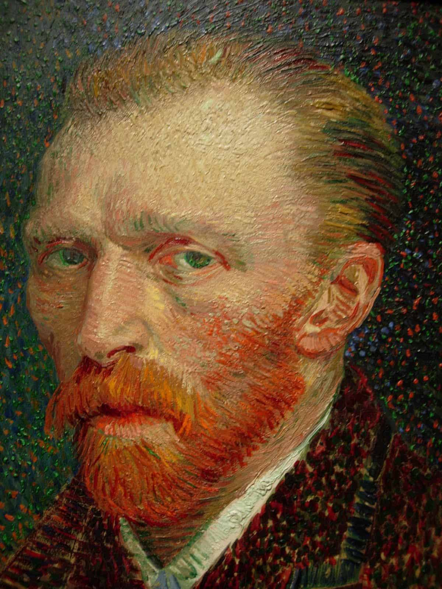
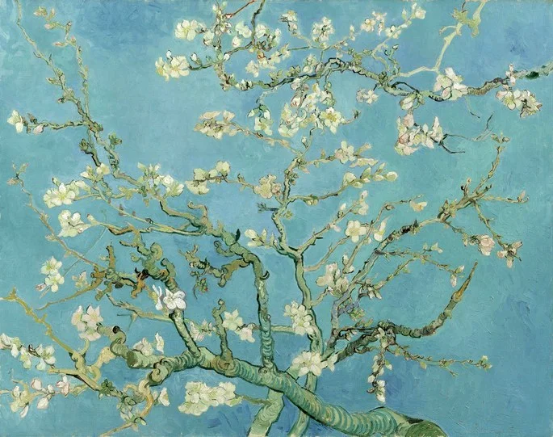

Van Gogh
"Mauve me censurava por ter
dito: 'Eu sou um artista'. Mas não me retrato, porque é evidente que essa palavra carrega
de modo implícito o significado de procurar sempre sem encontrar jamais a perfeição. É precisamente
o contrário de já sei, já encontrei. Eu busco, eu persigo e o faço com todo meu coração". -Vincent Van Gogh-

A NOITE ESTRELADA (1889)
O quadro mais famoso do pintor holandês foi criado enquanto Van Gogh estava internado no hospital psiquiátrico
de Saint-Rémy-de-Provence durante o ano de 1889.
Vincent havia pedido para o irmão mais novo, Theo, interná-lo após uma série de surtos psicóticos.
Não é confirmado propriamente qual teria sido a doença que acometia o criador, sabemos que sofria de epilepsia, mas
as outras doenças não foram bem identificadas (havia suspeitas de bipolaridade, tumor cerebral e depressão profunda).
A tela acima ilustra o nascer do sol visto da janela do quarto onde Van Gogh dormia. O trabalho apresenta alguns
elementos peculiares como as espirais do céu que imprimem uma noção de profundidade e movimento. Apesar do céu caótico, o
vilarejo que aparece na pintura tem ar pacato e alheio ao turbilhão exterior.

OS COMEDORES DE BATATA (1885)
A tela Os comedores de batata ilustra a hora do jantar, às sete da noite (marcada no relógio de ponteiro situado na parede
à esquerda do quadro). Na mesma parede da sala onde está o relógio vê-se também uma imagem religiosa, o que nos dá mais pistas sobre essa família.
A mesa estava composta por homens e mulheres que trabalhavam na terra. As mãos (fortes, ossudas) e os rostos (cansados, calejados pelo esforço) são
os protagonistas da tela. Van Gogh pretendia pintá-los como eram, fazendo um registro da vida doméstica.
O que está no centro da mesa - o jantar - são batatas (daí o nome da tela). Todo o quadro é pintado com o tom da cor da terra e a imagem contrasta o
claro e o escuro (repare como a luz no primeiro plano ilumina a mesa de refeição enquanto o fundo permanece sombrio).
A CASA AMARELA (1888)
O quadro "A casa amarela" criado em setembro de 1888, retrata a casa onde viveu o pintor quando deixou Paris. O criador alugou um quarto na casa amarela
em maio do mesmo ano em que pintou o quadro. O edifício onde residiu estava situado em um quarteirão perto da praça Lamartine, em Arles.
Na casa, Van Gogh morava e trabalhava com outros artistas em uma espécie de colônia, experimentando uma vivência coletiva embora cada um tivesse o seu próprio quarto.
A cidade escolhida pelo pintor estava a 16 horas de trem de paris, ao fundo da tela, do lado direito, nota-se a presença desse elemento que pode representar a sua
possibilidade de fuga (um viaduto com o trem acima).
A casa amarela é marcada pelas pinceladas soltas, a tela também é conhecida pelo contraste entre o azul do céu e o amarelo das casas. A imagem dá protagonismo não
só à habitação onde o pintor viveu como também ao quarteirão e ao ar da cidade.
O QUARTO (1888)
A pintura acima faz um registro do quarto que Van Gogh alugou em Arles. Na imagem vemos detalhes da vida do pintor como os móveis de madeira e as telas
penduradas nas paredes.
Van Gogh faz uso de cores fortes e contrastantes na obra e através dela percebemos um pouco do cotidiano do pintor. É curioso o fato de haverem duas cadeiras
e dois travesseiros quando se sabe que Vincent vivia sozinho.
Há suspeitas de que o quadro teria sido feito para o irmão, Theo, de modo a confortá-lo para que soubesse que Van Gogh estava bem.
AMENDOEIRA EM FLOR (1890)
Van Gogh era muito próximo do seu irmão mais jovem, Theo, que era recém casado com Johanna. E Amendoeira em flor foi pintado no ano de 1890, quando o casal
teve um filho. O quadro foi um presente oferecido por Van Gogh ao casal pelo bebê e era suposto ficar pendurado em cima do berço. Johanna, no entanto, gostou tanto
do quadro que o pendurou na sala.
Pintado com cores leves e tons pastéis, a tela apresenta um ângulo curioso, como se o espectador estivesse vendo a árvore da amendoeira por baixo. Os troncos, floridos, representam
justamente essa ideia de renascimento.
Uma curiosidade: o nome dado ao bebê, que nasceu no dia 31 de janeiro de 1890, foi Vincent, em homenagem ao tio pintor. Foi esse único sobrinho que criou o Museu Van Gogh, em 1973, em Amsterdam,
em parceria com o governo holandês.
